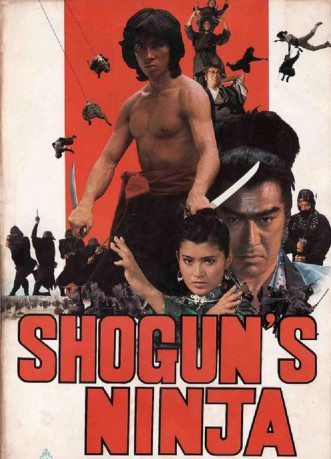

#10571 Shogun's Ninja
 
 IMDB-Wertung: 6.3 / 10
IMDB-Wertung: 6.3 / 10  Metascore: 0
Metascore: 0 
Japan 1581: Auf Befehl des Fürsten Hideyoshi zerschlägt der grausame Samurai Shogen (Sonny Chiba) den Clan der Momochi. Der kleine Takamaru kann dem Blutbad entkommen und nach China fliehen. Dort erlernt er die Kampfkunst. 20 Jahre später kehrt Takamaru (Hiroyuki HenrySanada) in seine Heimat zurück. Bei einem Ninja-Meister verfeinert er seine Technik. Takamaru vereint die Ninja um sich. Gemeinsam wollen sie den Tyrannen stürzen. Die Zeit der Rache ist gekommen…
Jahr: 1980
Dauer: 117 Minuten
FSK: Not Rated
Land: Japan Studio: Toei CompanyTonspuren:
Untertitel:
Auflösung: 1080p (1920x816) Größe: 8130 MB
Genre: Action, Drama, Abenteuer
Regisseur: Norifumi Suzuki
Drehbuch: Fumio Kônami, Ichirô Ôtsu
Soundtrack:
Darsteller:
 Hiroyuki Sanada als Momochi Takamaru
Hiroyuki Sanada als Momochi Takamaru Shin'ichi Chiba als Shiranui Shogen
Shin'ichi Chiba als Shiranui Shogen- Etsuko Shiomi als Ai-Lian
- Tetsurô Tanba als Tozawa Hakuunsai
 Isao Natsuyagi als Hattori Hanzo
Isao Natsuyagi als Hattori Hanzo- Yuki Ninagawa als Otsu
- Asao Koike als Toyotomi Hideyoshi
- Makoto Satô als Junka no Yatoji
- Fumio Watanabe als Tokugawa Ieyasu
- Masumi Harukawa als Yodo-Gimi
- Masashi Ishibashi als Momochi Sandayu
- Lee Murayama als Tang Shun-Qi
- Yôko Nogiwa als Chiyo
- Katsumasa Uchida als Shiranui Gennosuke
Datei: X:\FSK18-Eastern\Shogun's Ninja (1980, FSKNot Rated, 1920x816).mkv seit 21.01.2019
Festplatte: FSK18
 Es gibt insgesamt 102 Filme in der Gruppe 'FSK18-Eastern'
Es gibt insgesamt 102 Filme in der Gruppe 'FSK18-Eastern'